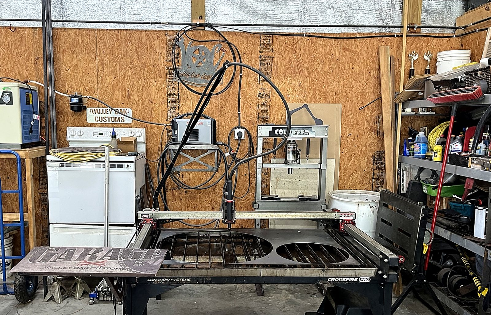

About
CNC fabrication and practical shop tools, built in Arkansas.
Valley Oak Customs is an Arkansas-based CNC plasma cutting, custom fabrication, and maker software business owned and operated by Ian Novinger. Based in Austin and serving Central Arkansas, the shop creates custom metal signs, décor, and one-off projects.
Originally rooted in automotive customization, Valley Oak Customs has evolved to focus on custom metalwork, CNC projects, and practical software tools for makers and small fabrication shops.
Most projects start with a simple idea: a name, a truck, a business logo, a flag, a sketch, or a photo. From there, we work toward a piece that makes sense in steel and fits where you want to use it.
Every project is designed, cut, cleaned, and finished in our shop. The goal is simple: create a piece you'll be proud to display, use, or give as a gift.
Have an idea that isn't in the gallery? We build one-off custom projects too.
